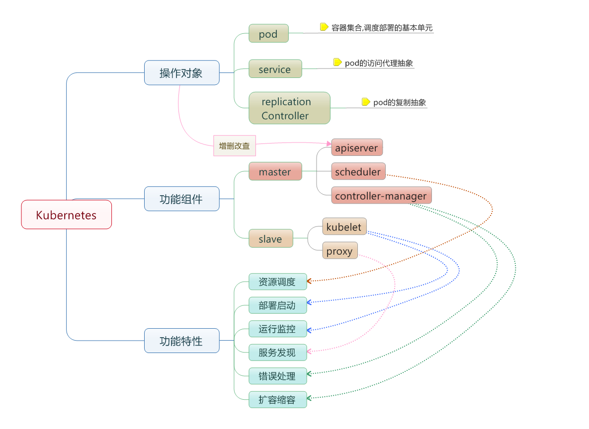

Kubernetes 的概念体系可以概括为操作对象、功能组件与功能特性三个层面，如图所示。下面介绍其中最基础的两个概念：节点（Node）与容器组（Pod）。
节点（Node）
在 Kubernetes 中，节点是实际工作的点，节点可以是虚拟机或者物理机器，依赖于一个集群环境。每个节点都有一些必要的服务以运行容器组，并且它们都可以通过主节点（Master）来管理。这些必要的服务包括 Docker、kubelet 和代理服务（kube-proxy）。
节点状态用来描述节点的当前状态，其中包含三个信息：主机 IP、节点周期（Phase）和节点条件（Condition）。
主机 IP 需要云平台来查询，Kubernetes 把它作为状态的一部分来保存。如果 Kubernetes 没有运行在云平台上，节点 ID 就是必需的。IP 地址可以变化，并且可以包含多种类型的 IP 地址，如公共 IP、私有 IP、动态 IP、IPv6 等等。
通常来说节点有 Pending、Running、Terminated 三个周期。如果 Kubernetes 发现了一个节点并且其可用，那么 Kubernetes 就把它标记为 Pending，然后在某个时刻，Kubernetes 将会标记其为 Running。节点的结束周期称为 Terminated。一个已经 Terminated 的节点不会接受和调度任何请求，并且已经在其上运行的容器组也会被删除。
节点条件主要用来描述处于 Running 状态的节点，当前可用的有 NodeReachable 和 NodeReady，以后可能会增加其他状态。NodeReachable 表示集群可达，NodeReady 表示 kubelet 返回 Status Ok 并且 HTTP 状态检查健康。
节点并非 Kubernetes 创建，而是由云平台创建，或者就是物理机器、虚拟机。在 Kubernetes 中，节点仅仅是一条记录，节点创建之后，Kubernetes 会检查其是否可用。节点用如下结构保存：
{
"id": "10.1.2.3",
"kind": "Minion",
"apiVersion": "v1beta1",
"resources": {
"capacity": {
"cpu": 1000,
"memory": 1073741824
}
},
"labels": {
"name": "my-first-k8s-node"
}
}Kubernetes 校验节点可用依赖于 ID。在当前的版本中，有两个接口可以用来管理节点：节点控制器（Node Controller）和 kubectl 管理。
在 Kubernetes 主节点中，节点控制器是用来管理节点的组件。节点控制器有一个同步轮询，主要监听所有云平台的虚拟实例，会根据节点状态创建和删除相应的节点，可以通过 --node_sync_period 标志来控制该轮询。
如果一个实例已经创建，节点控制器将会为其创建一个结构；同样的，如果一个节点被删除，节点控制器也会删除该结构。在 Kubernetes 启动时可以通过 --machines 标志来显式指定节点。同样可以使用 kubectl 来一条一条地添加节点，两者是相同的。通过设置 --sync_nodes=false 标志可以禁止集群之间的节点同步，也可以使用 API 或 kubectl 命令行来增删节点。
容器组（Pod）
在 Kubernetes 中，使用的最小单位是容器组（Pod），容器组是创建、调度、管理的最小单位。一个容器组内的容器使用相同的 Docker 环境，并共享卷（挂载点）。一个容器组是一个特定应用的打包集合，包含一个或多个容器。
和运行的容器类似，一个容器组被认为只有很短的运行周期。容器组被调度到某个节点上运行，直到容器的生命周期结束或者其被删除。如果节点死掉，运行在其上的容器组将会被删除而不是重新调度（也许在将来的版本中会添加容器组的移动）。
容器组主要是为了数据共享和它们之间的通信。在一个容器组中，容器都使用相同的网络地址和端口，可以通过本地网络来相互通信；每个容器组都有独立的 IP，可以通过网络来和其他物理主机或者容器通信。
容器组有一组存储卷（挂载点），主要是为了让容器在重启之后可以不丢失数据。
容器组是一个应用管理和部署的高层次抽象，同时也是一组容器的接口。容器组是部署、水平伸缩的最小单位。
容器组可以通过组合来构建复杂的应用。
为什么不在一个单一的容器里运行多个程序？
将多个程序分别封装为独立的容器、再组合进同一个容器组，既能保留各程序之间的隔离边界，又可以让它们共享网络和存储，便于统一地调度和管理，这也正是容器组这一抽象的意义所在。
容器组的状态
容器组的状态包括若干状态值：Pending、Running、Succeeded、Failed。
- Pending：容器组已经被节点接受，但有一个或多个容器还没有运行起来。这将包含某些节点正在下载镜像的时间，这种情形会依赖于网络情况。
- Running：容器组已经被调度到节点，并且所有的容器都已经启动，至少有一个容器处于运行状态（或者处于重启状态）。
- Succeeded：所有的容器都正常退出。
- Failed：容器组中所有容器都意外中断了。
通常来说，如果容器组被创建了就不会自动销毁，除非被某种行为触发，而触发此种情况可能是人为，或者复制控制器（Replication Controller）所为。唯一例外的情形是容器组以 Succeeded 状态成功退出，或者在一定时间内重试多次依然失败。
如果某个节点死掉或者不能连接，那么节点控制器将会标记其上的容器组的状态为 Failed。